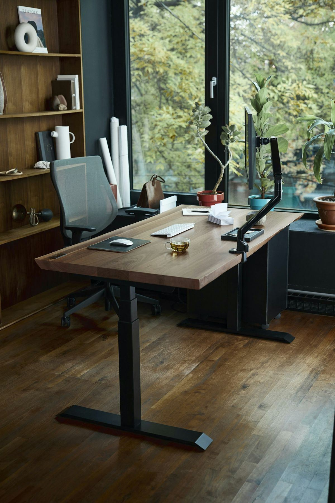

Buying checklist
Walking Pad Buying Checklist: 9 Things to Check

This guide contains affiliate links. If you buy through them, Holistic Life may earn a small commission at no extra cost to you. How we use affiliate links.
Quick answer
- A walking pad is a slim, flat treadmill made for walking, often under a desk.
- Check nine things before you buy: weight limit, belt size, speed, noise, motor, incline, size, controls and safety.
- Read the return policy and plan your floor and desk setup before the box arrives.
- Sales come and go, but this checklist stays the same.
A walking pad is a slim treadmill made for walking, often at a slow or moderate pace. Many fit under a desk or slide beneath a couch. They are a handy way to keep moving on cold, dark or busy days.
This is a nurse-run site, and this guide is a plain checklist. It does not name brands or models, because those change often. Sales come and go, and the checklist does not change, so you can use it any time of year.
The CDC says adults need at least 150 minutes of moderate activity each week, and it lists brisk walking as an example. A pad makes it easier to fit walking in around work and weather, and a slower walk at your desk still breaks up long stretches of sitting.
The 9 things to check
- Weight capacity. Look for a stated limit well above the heaviest user. A margin generally means less strain on the belt and motor. Remember that the limit may cover the user only, not extra weight from a bag or a laptop.
- Belt length and width. Shorter and taller walkers have different strides. The belt should be long enough that you do not feel you must shorten your steps, and wide enough for your feet to sit side by side.
- Speed range. Most pads are made for walking only. If you want to jog a little, check the top speed and look for models built for it. A slow minimum speed is helpful for desk work and for beginners.
- Noise and what the listing does not tell you. A quiet number on a page may not match your floor. Hard floors, thin floors and upstairs apartments all carry sound. A mat helps, and so does reading reviews that mention floors and neighbors.
- Motor rating in plain terms. A bigger number usually means the motor handles weight and longer sessions more easily. A modest motor is fine for slow walking. Check that it is rated for continuous use if you plan long sessions.
- Incline or flat. Most pads are flat. An incline adds variety, but it also adds weight and moving parts to the machine. If you want a challenge later, consider a model with an incline. If you just want to move at a desk, flat is fine.
- Size and weight for storage. Measure the space where it will live and the gap under your bed or couch. Look for wheels or a carry handle, and check how heavy it is. If you cannot move it alone, it may stay in the way.
- Controls and display. A remote that is easy to find, a readable screen, and a clear start and stop matter more than an app. If the controls feel clumsy, you will stop using it.
- Safety features, warranty and returns. Look for an auto-stop, a safety key or a handrail option. Then read the warranty and return policy. Sending back a heavy item can be a hassle, so know the rules before you open the box.
Walking pad
A flat, slim belt that slides under a couch or bed. It suits people who want to walk at a desk or in front of a show.
What to look for
- A weight limit above the user's weight, with room to spare
- A belt long and wide enough for your stride
- A quiet motor and a simple remote
See walking pads on Amazon (paid link)
Walking pad with a handle or incline
A folding handle gives balance, and an incline adds variety. It is a good option for people who feel unsteady or want a bit more challenge.
What to look for
- A sturdy handle that locks in place
- Incline settings that are easy to change
- A fold that is simple to do alone
See walking pads with handles on Amazon (paid link)
Equipment mat
A mat protects floors, steadies the machine and softens vibration and noise, which matters in an apartment.
What to look for
- A size larger than the walking pad
- A dense, non-slip surface
- A material that does not stain floors
See equipment mats on Amazon (paid link)
Standing desk or desk riser
Walking at a desk works best when the desk is at the right height. A riser or a height-adjustable desk lets you set it up properly.
What to look for
- A height range that suits you while standing
- A sturdy base with little wobble
- A keyboard tray or a large surface for a laptop
See desk risers on Amazon (paid link)
Pair it with a desk
Walking at a desk works best when the setup is right from day one.
- Measure. Check the floor space for the pad and the clearance under the desk before you set anything up.
- Mat. Put a mat under the pad to protect the floor and cut down on noise.
- Height. Set the desk so your elbows bend at about a right angle and your wrists stay straight. If the desk is too high, your shoulders creep up. Many people need a riser or an adjustable desk.
- Cables. Route power cords and laptop chargers away from the belt. A loose cable under your feet is a trip risk.
- Start slowly. Begin with a few minutes at the slowest speed during calls or email. Add time over several weeks, and stop if anything feels off. If you want a gentle plan to follow, see our beginner walking plan.
Who should check with a clinician first
Talk with your doctor or another clinician before you start if any of these apply to you:
- Balance problems or dizziness
- A recent injury, surgery or joint pain
- Heart, lung or other health conditions that affect exercise
A model with a handrail can help, and so can a slower start. Your clinician can give advice for your situation.
Before you order
Write down your floor type, the space available and the maximum weight you need. Compare any pad against the nine checks. If you are still deciding on gear for the room, our small space home gym starter kit shows what to buy first. Buying for someone else? Our gifts for people who love to walk covers smaller options.
Frequently asked questions
Can I walk on a walking pad every day?
Many people do, in short sessions that build up slowly. Start with a few minutes at a slow pace and add time as it feels comfortable. If you have a health condition, ask your clinician first.
Do walking pads work for working at a desk?
Many people find a slow pace works well for tasks like email and calls. Typing and writing may feel harder at first, so give yourself a few weeks to adjust.
Sources
Save this guide for later
Tap a pin to save it to your Pinterest boards.